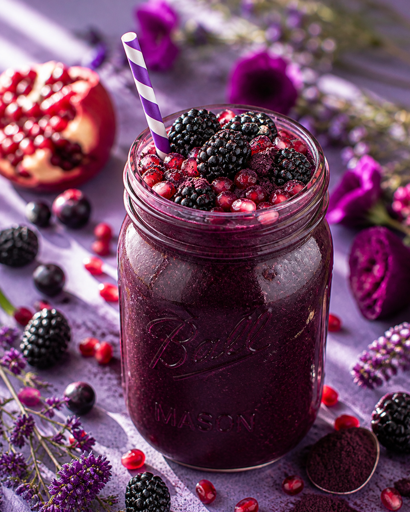

What you will need
- One unsweetened acai packet, slightly thawed
- One half cup of frozen blackberries
- One quarter cup of pomegranate juice
- One half cup of coconut kefir
- One tablespoon of ground flaxseed
- One teaspoon of honey
- A few ice cubes
How to make it
Wash fresh produce unless labeled ready-to-eat. Remove pits, hard seeds, or peel as needed, and cut large pieces to suit your blender.
Add the liquid first, then softer ingredients and fruit. Add frozen pieces gradually if your blender struggles.
Blend until smooth. Stop the blender before scraping or stirring, and add a little liquid if the mixture is too thick.
Taste before adding optional sweetener or extra citrus. Divide into glasses and serve.
Adjust the flavor
More blackberries can replace the acai packet. Plain yogurt plus water can replace kefir. Check cultured plant products because texture and nutrition vary.
A useful preparation tip
Slightly soften the acai packet so you can break it into pieces. If berry seeds bother you, choose a smoother fruit rather than trying to strain a thick drink.
Serving and keeping it fresh
Make a small batch close to serving for the best texture. Cover and refrigerate promptly if you save a portion. Separation can happen; stir before serving. Fresh homemade juice is untreated, and lemon does not make it shelf-stable.
FoodSafety.gov recommends refrigerating perishable food within two hours, or one hour above 90°F, and keeping the refrigerator at 40°F or below.
Portions and ingredients
Fruit size and optional ingredients can change the final quantity. Use the ingredient labels and actual portions if you track nutrition. Check packaged ingredients for allergens and choose substitutions that suit your needs.
For more preparation choices, see our smoothie troubleshooting guide. You can change a recipe to suit your taste without needing a health promise attached to it.